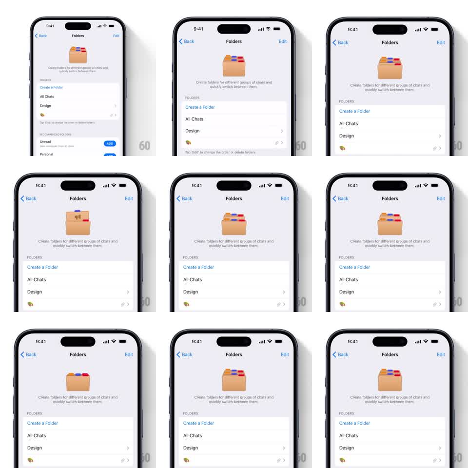

Media
Frame-by-frame

Rebuild this animation 1:1: Telegram's Folders empty-state illustration - a springy vector folder at the top of the Folders settings page that opens its flap and lifts colorful categorized tabs out of its body on a loop.

Rebuild this animation 1:1: Telegram's Folders empty-state illustration - a springy vector folder at the top of the Folders settings page that opens its flap and lifts colorful categorized tabs out of its body on a loop. ## Integration Integration: stack-agnostic spec - springs given as stiffness/damping, timed motions as duration + curve; map every value to your framework and animation library of choice. ## Scene Folders settings screen: nav title "Folders" with Back/Edit, centered tan folder illustration with red, blue, and white tab dividers peeking from its top, helper text beneath, then grouped list rows (Create a Folder, All Chats, Design...). ## Motion spec Pattern: looping springy illustration. - Folder flap: rotates open toward the viewer (~30deg, spring ~200/16, slight overshoot) and settles. - Tabs: three colored tabs rise from inside the folder in a stagger (60ms apart, translateY + slight tilt, spring ~240/18), hold, then drop back and the flap closes. - Full cycle ~2.5s with a pause; loops continuously. - Rest of the screen is completely static. ## Calibration - Springs overshoot just enough to feel playful - one visible wobble, no ringing. - Tabs stay inside the folder's silhouette until they clear the flap line. ## Reduced motion Static illustration of the open folder with tabs out. ## Don't miss - The flap and tabs move together as one rig - flap opens first, tabs follow. - Colors are flat Telegram-palette fills, no gradients on the folder.